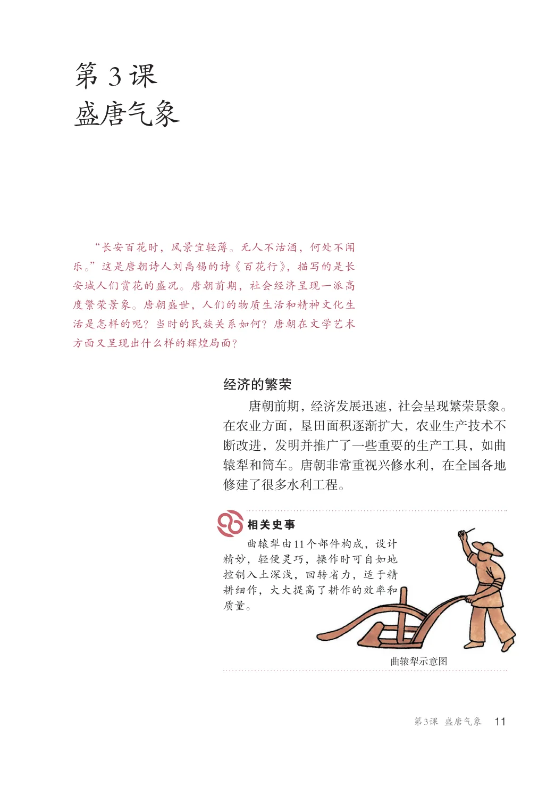
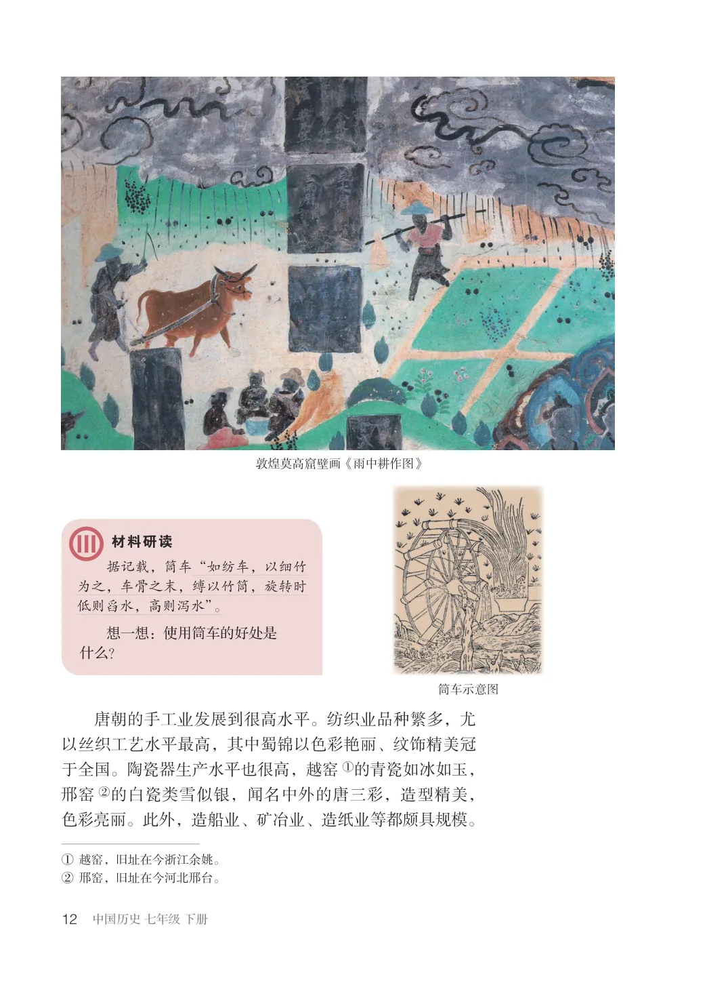
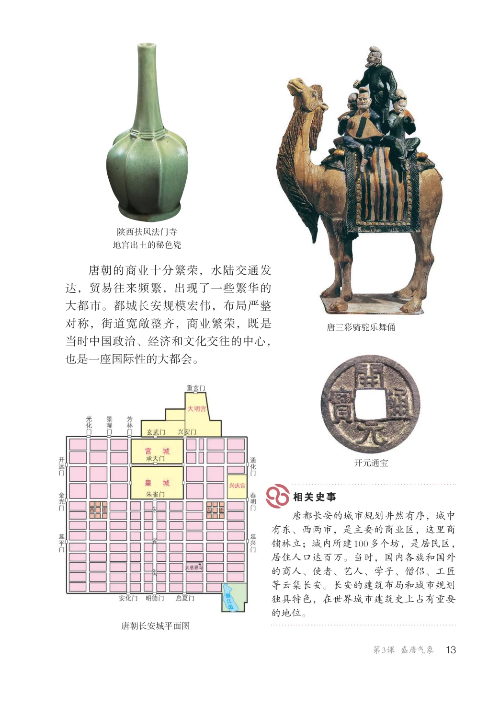
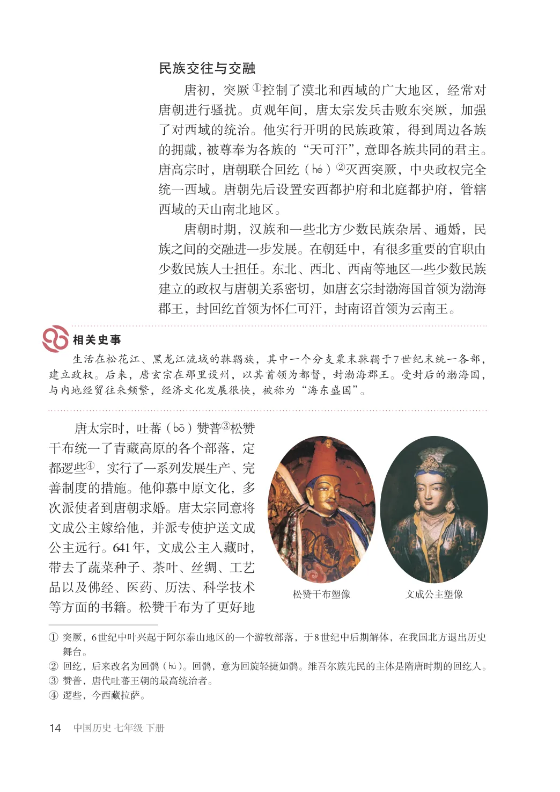
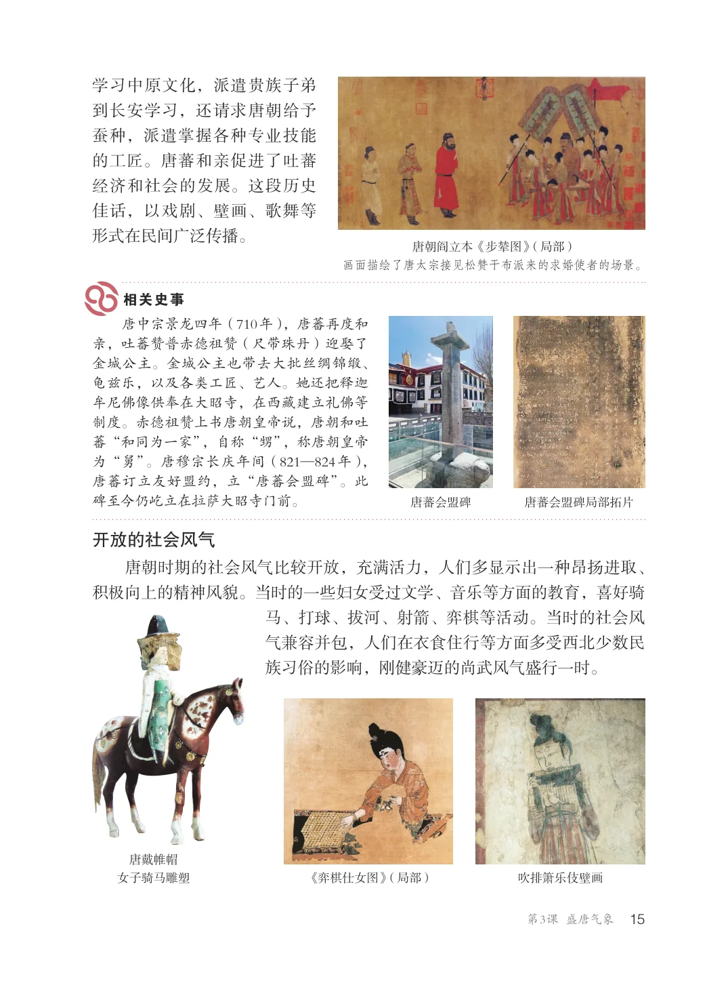
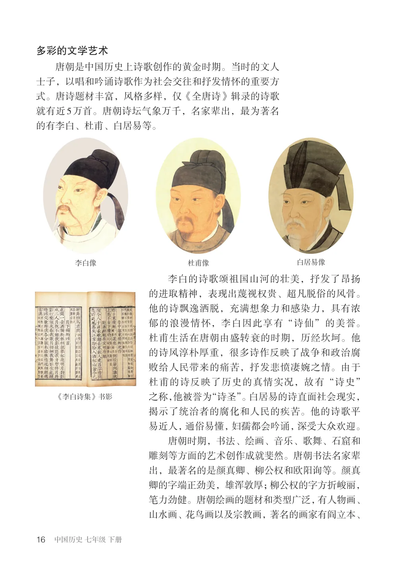
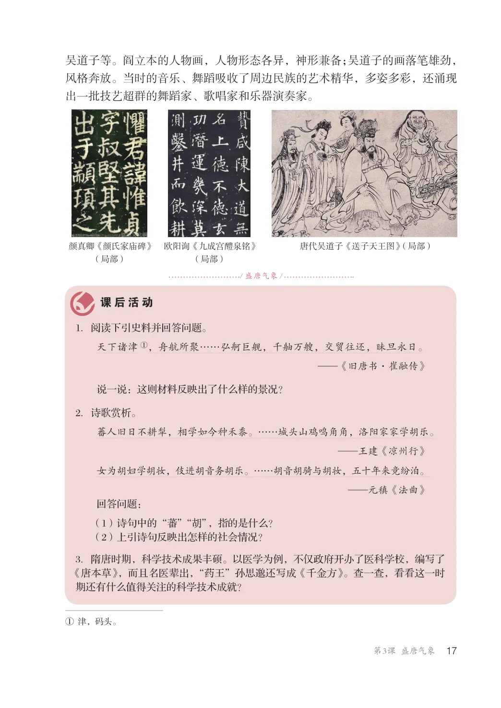
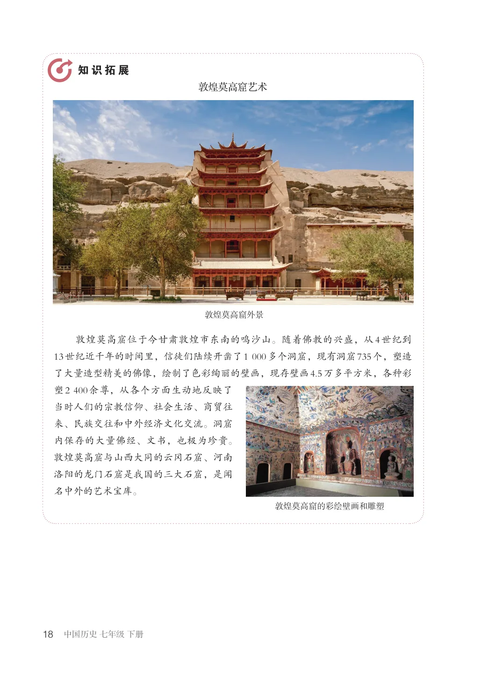

第1单元 · 教材第 11–18 页
第3课 盛唐气象
文字版依据教材 PDF 文本层整理；复杂地图、图表及版面关系请以右侧教材原页为准。
“长安百花时，风景宜轻薄。无人不沽酒，何处不闻乐。”这是唐朝诗人刘禹锡的诗《百花行》，描写的是长安城人们赏花的盛况。唐朝前期，社会经济呈现一派高度繁荣景象。唐朝盛世，人们的物质生活和精神文化生活是怎样的呢？当时的民族关系如何？唐朝在文学艺术方面又呈现出什么样的辉煌局面？
经济的繁荣
唐朝前期，经济发展迅速，社会呈现繁荣景象。在农业方面，垦田面积逐渐扩大，农业生产技术不断改进，发明并推广了一些重要的生产工具，如曲辕犁和筒车。唐朝非常重视兴修水利，在全国各地修建了很多水利工程。
曲辕犁由11个部件构成，设计精妙，轻便灵巧，操作时可自如地控制入土深浅，回转省力，适于精耕细作，大大提高了耕作的效率和质量。
曲辕犁示意图

敦煌莫高窟壁画《雨中耕作图》
据记载，筒车“如纺车，以细竹为之，车骨之末，缚以竹筒，旋转时低则舀水，高则泻水”。想一想：使用筒车的好处是什么？
筒车示意图
唐朝的手工业发展到很高水平。纺织业品种繁多，尤以丝织工艺水平最高，其中蜀锦以色彩艳丽、纹饰精美冠于全国。陶瓷器生产水平也很高，越窑①的青瓷如冰如玉，邢窑②的白瓷类雪似银，闻名中外的唐三彩，造型精美，色彩亮丽。此外，造船业、矿冶业、造纸业等都颇具规模。
①越窑，旧址在今浙江余姚。②邢窑，旧址在今河北邢台。

陕西扶风法门寺地宫出土的秘色瓷
唐朝的商业十分繁荣，水陆交通发达，贸易往来频繁，出现了一些繁华的大都市。都城长安规模宏伟，布局严整对称，街道宽敞整齐，商业繁荣，既是当时中国政治、经济和文化交往的中心，也是一座国际性的大都会。
唐三彩骑驼乐舞俑
开元通宝
唐都长安的城市规划井然有序，城中有东、西两市，是主要的商业区，这里商铺林立；城内所建100多个坊，是居民区，居住人口达百万。当时，国内各族和国外的商人、使者、艺人、学子、僧侣、工匠等云集长安。长安的建筑布局和城市规划独具特色，在世界城市建筑史上占有重要的地位。
唐朝长安城平面图

民族交往与交融
唐初，突厥①控制了漠北和西域的广大地区，经常对唐朝进行骚扰。贞观年间，唐太宗发兵击败东突厥，加强了对西域的统治。他实行开明的民族政策，得到周边各族的拥戴，被尊奉为各族的“天可汗”，意即各族共同的君主。唐高宗时，唐朝联合回纥（hR）②灭西突厥，中央政权完全统一西域。唐朝先后设置安西都护府和北庭都护府，管辖西域的天山南北地区。唐朝时期，汉族和一些北方少数民族杂居、通婚，民族之间的交融进一步发展。在朝廷中，有很多重要的官职由少数民族人士担任。东北、西北、西南等地区一些少数民族建立的政权与唐朝关系密切，如唐玄宗封渤海国首领为渤海郡王，封回纥首领为怀仁可汗，封南诏首领为云南王。
生活在松花江、黑龙江流域的靺鞨族，其中一个分支粟末靺鞨于7世纪末统一各部，建立政权。后来，唐玄宗在那里设州，以其首领为都督，封渤海郡王。受封后的渤海国，与内地经贸往来频繁，经济文化发展很快，被称为“海东盛国”。
唐太宗时，吐蕃（bT）赞普③松赞干布统一了青藏高原的各个部落，定都逻些④，实行了一系列发展生产、完善制度的措施。他仰慕中原文化，多次派使者到唐朝求婚。唐太宗同意将文成公主嫁给他，并派专使护送文成公主远行。641年，文成公主入藏时，带去了蔬菜种子、茶叶、丝绸、工艺品以及佛经、医药、历法、科学技术等方面的书籍。松赞干布为了更好地
松赞干布塑像
文成公主塑像
①突厥，6世纪中叶兴起于阿尔泰山地区的一个游牧部落，于8世纪中后期解体，在我国北方退出历史舞台。②回纥，后来改名为回鹘（hP）。回鹘，意为回旋轻捷如鹘。维吾尔族先民的主体是隋唐时期的回纥人。③赞普，唐代吐蕃王朝的最高统治者。④逻些，今西藏拉萨。

学习中原文化，派遣贵族子弟到长安学习，还请求唐朝给予蚕种，派遣掌握各种专业技能的工匠。唐蕃和亲促进了吐蕃经济和社会的发展。这段历史佳话，以戏剧、壁画、歌舞等形式在民间广泛传播。
唐朝阎立本《步辇图》（局部）画面描绘了唐太宗接见松赞干布派来的求婚使者的场景。
唐中宗景龙四年（710年），唐蕃再度和亲，吐蕃赞普赤德祖赞（尺带珠丹）迎娶了金城公主。金城公主也带去大批丝绸锦缎、龟兹乐，以及各类工匠、艺人。她还把释迦牟尼佛像供奉在大昭寺，在西藏建立礼佛等制度。赤德祖赞上书唐朝皇帝说，唐朝和吐蕃“和同为一家”，自称“甥”，称唐朝皇帝为“舅”。唐穆宗长庆年间（821—824年），唐蕃订立友好盟约，立“唐蕃会盟碑”。此碑至今仍屹立在拉萨大昭寺门前。
唐蕃会盟碑局部拓片
唐蕃会盟碑
开放的社会风气
唐朝时期的社会风气比较开放，充满活力，人们多显示出一种昂扬进取、积极向上的精神风貌。当时的一些妇女受过文学、音乐等方面的教育，喜好骑马、打球、拔河、射箭、弈棋等活动。当时的社会风气兼容并包，人们在衣食住行等方面多受西北少数民族习俗的影响，刚健豪迈的尚武风气盛行一时。
吹排箫乐伎壁画唐戴帷帽女子骑马雕塑
《弈棋仕女图》（局部）

多彩的文学艺术
唐朝是中国历史上诗歌创作的黄金时期。当时的文人士子，以唱和吟诵诗歌作为社会交往和抒发情怀的重要方式。唐诗题材丰富，风格多样，仅《全唐诗》辑录的诗歌就有近5万首。唐朝诗坛气象万千，名家辈出，最为著名的有李白、杜甫、白居易等。
李白像杜甫像白居易像
李白的诗歌颂祖国山河的壮美，抒发了昂扬的进取精神，表现出蔑视权贵、超凡脱俗的风骨。他的诗飘逸洒脱，充满想象力和感染力，具有浓郁的浪漫情怀，李白因此享有“诗仙”的美誉。杜甫生活在唐朝由盛转衰的时期，历经坎坷。他的诗风淳朴厚重，很多诗作反映了战争和政治腐败给人民带来的痛苦，抒发悲愤凄婉之情。由于杜甫的诗反映了历史的真情实况，故有“诗史”之称，他被誉为“诗圣”。白居易的诗直面社会现实，揭示了统治者的腐化和人民的疾苦。他的诗歌平易近人，通俗易懂，妇孺都会吟诵，深受大众欢迎。唐朝时期，书法、绘画、音乐、歌舞、石窟和雕刻等方面的艺术创作成就斐然。唐朝书法名家辈出，最著名的是颜真卿、柳公权和欧阳询等。颜真卿的字端正劲美，雄浑敦厚；柳公权的字方折峻丽，笔力劲健。唐朝绘画的题材和类型广泛，有人物画、山水画、花鸟画以及宗教画，著名的画家有阎立本、
《李白诗集》书影

吴道子等。阎立本的人物画，人物形态各异，神形兼备；吴道子的画落笔雄劲，风格奔放。当时的音乐、舞蹈吸收了周边民族的艺术精华，多姿多彩，还涌现出一批技艺超群的舞蹈家、歌唱家和乐器演奏家。
颜真卿《颜氏家庙碑》
欧阳询《九成宫醴泉铭》
唐代吴道子《送子天王图》（局部）
（局部）
（局部）
/ 盛唐气象/
1．阅读下引史料并回答问题。
天下诸津①，舟航所聚……弘舸巨舰，千舳万艘，交贸往还，昧旦永日。
—《旧唐书·崔融传》
说一说：这则材料反映出了什么样的景况？
2．诗歌赏析。
蕃人旧日不耕犁，相学如今种禾黍。……城头山鸡鸣角角，洛阳家家学胡乐。
—王建《凉州行》女为胡妇学胡妆，伎进胡音务胡乐。……胡音胡骑与胡妆，五十年来竞纷泊。—元稹《法曲》回答问题：（1）诗句中的“蕃”“胡”，指的是什么？（2）上引诗句反映出怎样的社会情况？
3．隋唐时期，科学技术成果丰硕。以医学为例，不仅政府开办了医科学校，编写了《唐本草》，而且名医辈出，“药王”孙思邈还写成《千金方》。查一查，看看这一时期还有什么值得关注的科学技术成就？
①津，码头。

敦煌莫高窟艺术
敦煌莫高窟外景
敦煌莫高窟位于今甘肃敦煌市东南的鸣沙山。随着佛教的兴盛，从4世纪到13世纪近千年的时间里，信徒们陆续开凿了1000多个洞窟，现有洞窟735个，塑造了大量造型精美的佛像，绘制了色彩绚丽的壁画，现存壁画4.5万多平方米，各种彩塑2400余尊，从各个方面生动地反映了当时人们的宗教信仰、社会生活、商贸往来、民族交往和中外经济文化交流。洞窟内保存的大量佛经、文书，也极为珍贵。敦煌莫高窟与山西大同的云冈石窟、河南洛阳的龙门石窟是我国的三大石窟，是闻名中外的艺术宝库。
敦煌莫高窟的彩绘壁画和雕塑
